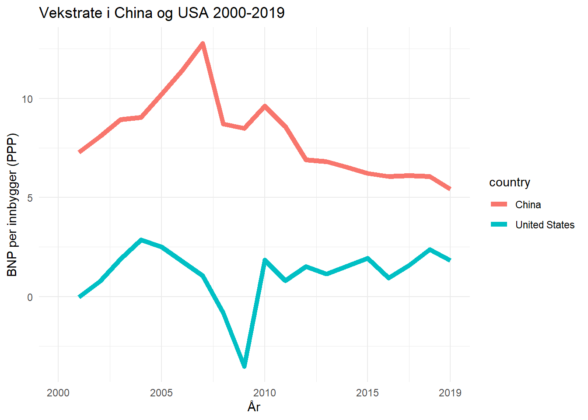

Seminar_1
You can add options to executable code like this
Oppgave 1:
Bruk variabelen “NY.GDP.PCAP.KD”(BNP per innbygger målt i konstante 2015 USD) fra pakken “WDI” (World Development Indicators, fra Verdensbanken). Tegn en graf over vekstraten i BNP per innbygger i USA og China i tidsperioden 2000-2019.
WDIsearch(string = "NY.GDP.PCAP.KD", field = "name", short = TRUE, cache = NULL)[1] indicator name
<0 rows> (or 0-length row.names)df_gdp<-WDI(
country = c("CN", "US"),
indicator = c('gdppc'="NY.GDP.PCAP.KD"),
start = 2000,
end = 2019,
extra = FALSE,
latest = NULL,
language = "en"
)# Vekst i BNP per innbygger
df_growth = df_gdp %>%
arrange(iso3c, year) %>% # Sorter pC% C%r og land
ddply("iso3c",transform,
gdpgrowth=c(NA,diff(log(gdppc)))*100) %>% # Crlig vekstrate i gdppc
mutate(gdpgrowth = as.numeric(gdpgrowth, na.rm = TRUE)) Lage plott på vekstraten i BNP per innbygger i China og USA i perioden 2000-2019
plot_growth <- ggplot(df_growth, aes(x = year , y = gdpgrowth, na.rm = TRUE)) +
xlab("År") +
ylab("BNP per innbygger (PPP)") +
ggtitle("Vekstrate i China og USA 2000-2019") +
geom_line(aes(color = country), lwd=2) +
scale_x_continuous(breaks=c(2000, 2005, 2010, 2015, 2019)) +
theme_minimal()
plot_growth
Oppgave 2: a Tegn en graf over nivå på BNP per innbygger i China og USA i tidsperioden 2000-2019. Bruk variablene NY.GDP.PCAP.KD og NY.GDP.PCAP.PP.KD (PPP 2017).
# henter variablene
df_gdp_1<-WDI(
country = c("CN", "US"),
indicator = c('gdppc'="NY.GDP.PCAP.KD", 'gdppc_ppp'="NY.GDP.PCAP.PP.KD"),
start = 2000,
end = 2019,
extra = FALSE,
latest = NULL,
language = "en"
)
# vi ønsker å ha med både BNP per innbygger i konstante USD og PPP-justert BNP per innbygger. For å ha med begge i vår graf, må vi transformere data.
data_long <- gather(df_gdp_1, gdp_type, gdp, gdppc:gdppc_ppp, factor_key=TRUE)
#View (data_long)
data_long <- data_long %>%
arrange(country, year)# Graf over BNP per innbygger i USA og China
plot_gdp <- ggplot(data_long, aes(x = year , y = gdp, group=gdp_type)) +
xlab("År") +
ylab("BNP per innbygger") +
ggtitle("BNP per innbygger i USA og China 2000-2019") +
geom_point(aes(shape=gdp_type, color = country), size=3) +
scale_y_continuous(trans = 'log2', labels = dollar, breaks=c(500, 2000, 8000, 32000, 120000)) +
scale_x_continuous(breaks=c(2000, 2005, 2010, 2015, 2019)) +
scale_shape_manual(values = c(15, 8)) +
theme_minimal()
#Display the plot
plot_gdp
Oppgave 3:
Beregn gjennomsnittligårlig vekst i BNP per innbygger for perioden 2000-2019 for USA og China. Behold siste året (2019) for China og USA
# Gjennomsnittlig årlig vekst i BNP per innbygger
df_growth_1 = df_growth %>%
arrange(iso3c, year) %>% # Sorter på år og land
group_by(iso3c) %>%
ddply("iso3c",transform,
avg_gdpgrowth=mean(gdpgrowth, na.rm = TRUE))
df_growth2019 = df_growth_1 %>%
arrange(iso3c, year) %>%
group_by(iso3c) %>%
slice(n()) %>% # Behold den SISTE observasjonen for hvert land (2019)
ungroup()Oppgave 3a:
Hvor lang tid vil det ta for China å dubblere BNP per innbygger, gitt at økonomien vokser med samme rate framover?
# Beregne dobbleringstid for China
df_double = df_growth2019 %>%
ddply("iso3c",transform,
double=c(NA,(log(2)/(avg_gdpgrowth/100))))
head(df_double) country iso2c iso3c year gdppc gdpgrowth avg_gdpgrowth double
1 China CN CHN 2019 10155.49 5.425442 8.064932 NA
2 China CN CHN 2019 10155.49 5.425442 8.064932 8.594581
3 United States US USA 2019 60698.01 1.813131 1.154142 NA
4 United States US USA 2019 60698.01 1.813131 1.154142 60.057365Oppgave 3b:
Når vil China gå forbi USA i BNP per innbygger, gitt at økonomien vokser med samme gjennomsnittlige vokstrate som de har gjort i de siste 20 årene?
t <- (log(60698.01)-log(10155.49))/((8.064932/100)-(1.154142/100))
t [1] 25.87109Oppgave 4:
Tegn Lorenz kurver for USA og China i 1985 og 2015. Du finner data med inntektsfordeling her. Du finner kode til oppgaven på denne hjemmesiden.
Tolk Lorenz-kurvene, hva har skjedd med ulikheten i China og USA mellom 1985 ogo 2015?
# df_income <- read_csv("C:/Users/OddVi/OneDrive/Dokumenter/Studier/SOK-2011/Oppgaver/income.csv", skip = 2)
#
#
# # Velg data for China og USA i C%rene 1980 og 2014
# sel_Year <- c(1985, 2015)
# sel_Country <- c("United States", "China")
# temp <- subset(
# df_income,
# (df_income$Country %in% sel_Country) &
# (df_income$Year %in% sel_Year))
# tempOppgave 5
Gå ut fra at en økonomis totale produksjon (BNP) kan beskrives ved bruk av produksjonsfunksjonen:
\(Y(t) = A(t)*K(t)^\alpha*L(t)^\beta*R(t)^\gamma\)
der \(\alpha = 0.4,\beta = 0.5\) og \(\gamma = 0.1\).
Oppgave 5a:
Med hvor mange prosent endres \(Y\) dersom \(K\) øker med 1\(\%\), ceteris paribus? Dette kan vi lese direkte av eksponentene. Hvis \(K\) øker med 1\(\%\), vil \(Y\) øke med 0.4\(\%\).
Oppgave 5b:
Hvor mange prosent endres \(Y\) med hvis alle produksjonsfaktorene (\(K,L,R\)) endres med 10\(\%\)? Vi kan også lese dette direkte ut av produktfunksjonen. Når summen av ekspnentene er 1, har vi konstant skalautbytte. Dette betyr at når alle produksjonsfaktorene (\(K,L,R\)) endres med 10\(\%\), vil \(Y\) endres med 10\(\%\).